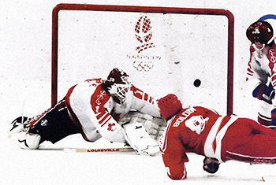
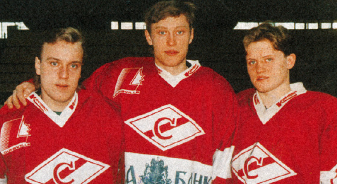

Серебряные медали сезона-1990/1991 так и остались для «Спартака» последним достижением. Развалился Советский Союз, а с ним и устройство отечественного хоккея.

Игорь Болдин
забивает важнейший
гол в своей карьере
«Спартак» в сезоне-1991/1992 не мог похвастаться высоким результатом в чемпионате. Зато тройка красно-белых Борщевский — Болдин — Прохоров поехала на Олимпиаду в Альбервилль в составе Объединённой команды. И не просто поехала, а выиграла золото. И не просто выиграла, а забросила победную шайбу в финальном матче — гол на счету центрфорварда Игоря Болдина.
После олимпийского триумфа, который до настоящего времени остаётся последним для нашего хоккея, ведущие форварды «Спартака» отправились за океан. Кроме Болдина, который пропустил целый год из-за автокатастрофы, а затем уехал играть в Финляндию.
В сезоне-1992/1993 «Спартак» проиграл в плей-офф «Металлургу» из Магнитогорска. Тогда для всех поклонников хоккея с ромбиком это стало настоящим шоком. Неизвестный клуб, который вынесло на вершину время, сейчас является многократным чемпионом России, а «Спартак» так до сих пор и не выиграл в Магнитогорске ни одной игры, взяв за это время лишь одно очко за поражение в овертайме.
Свято место пусто не бывает, и в «Спартаке» образовалась тройка Клевакин — Епанчинцев — Шаламай.

Правда, финансирование красно-белых оставляло желать много лучшего. Первый автокомбинат в лице Геннадия Краузе сам переживал кризис. Геннадий Леонидович оплачивал передвижение команды, проживание и питание, но на зарплаты денег не было. Приходилось игрокам вечерами «бомбить» на личном автотранспорте. Как говорится, из песни слова не выкинешь. И даже выигрыш «Спартаком» турнира «Миллион на льду» в эти годы не мог существенно улучшить ситуацию из-за гиперинфляции.